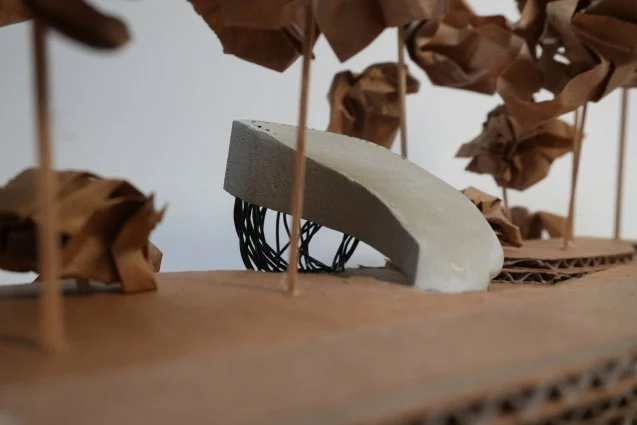
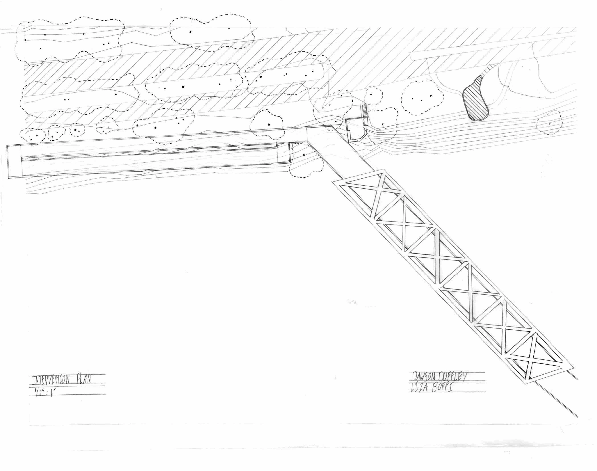
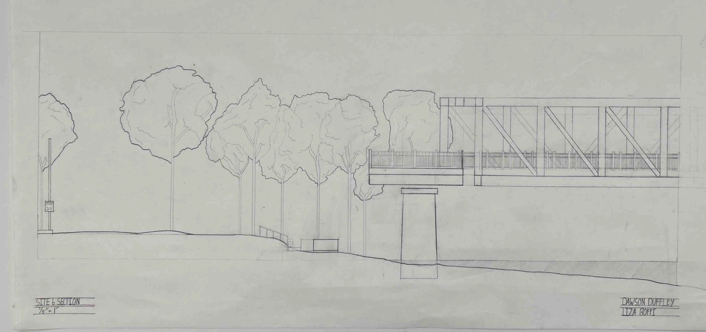
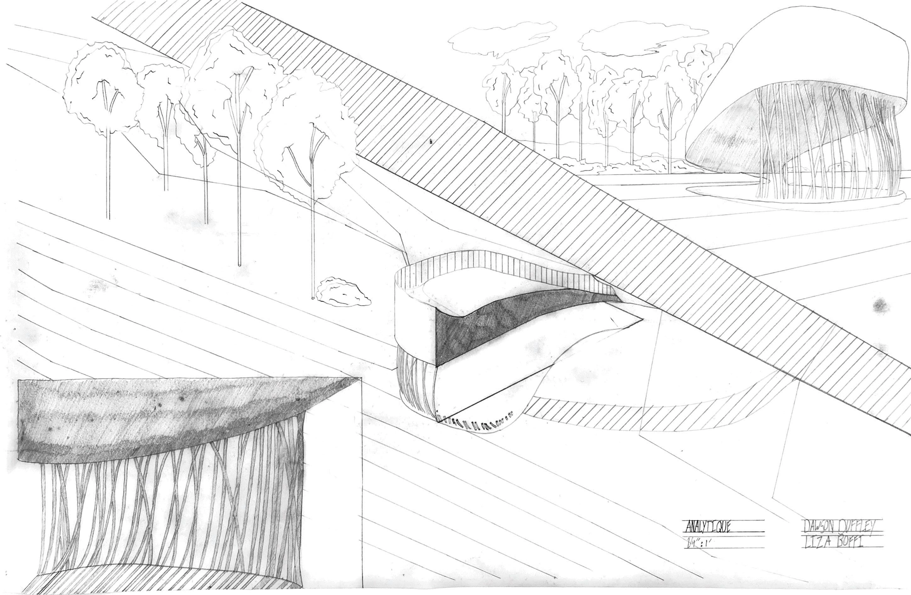
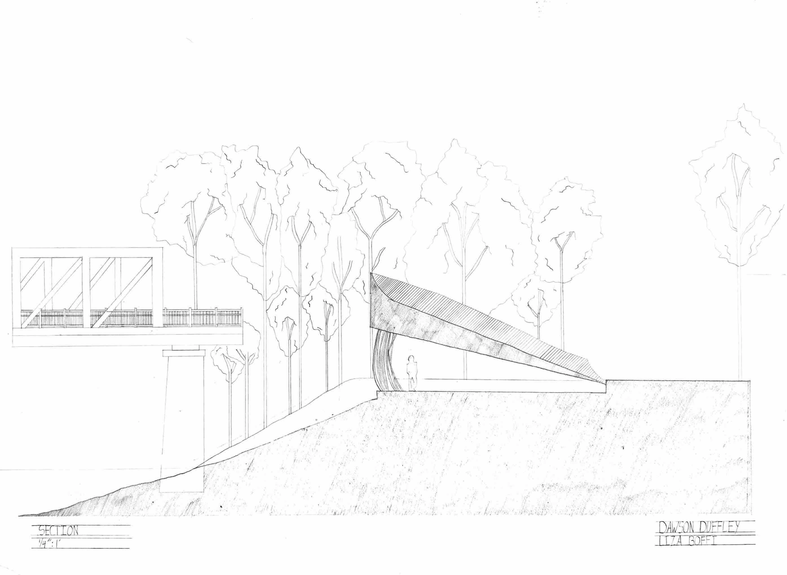

04 / Landscape / Light
The Spatial Device
Three Rivers Heritage Trail, Pittsburgh — Poiesis I

An intervention along the Three Rivers Heritage Trail
An intervention along the Three Rivers Heritage Trail explores tectonic and stereotomic principles through light, enclosure, and the experience of the site. Physical models and hand drawings study light, structure, and views along the trail.
Academic project: Dawson Duffley. Studio coordinator: Jared Abraham. Instructor: Liza Boffi. Teaching fellow: Rupal Singh.





Original drawing PDFs: Plan ↗ · Section ↗ · Analytique ↗